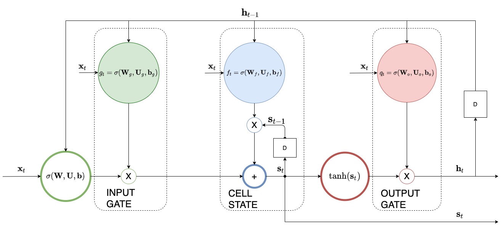

The Long Short-Term Memory (LSTM) Cell Architecture
Contents
The Long Short-Term Memory (LSTM) Cell Architecture¶
In [the simple RNN]() we have seen the problem of exploding or vanishing gradients when the span of back-propagation is large (large \(\tau\)). Using the conceptual IIR filter, that ultimately integrates the input signal, we have seen that in order to avoid an exploding or vanishing impulse response, we need to control \(w\). This is exactly what is being done in evolutionary RNN architectures that we will treat in this section called gated RNNs. The best known gated RNN architecture is called the LSTM cell and in this case the weight \(w\) is not fixed but it is determined based on the input sequence context. The architecture is shown below.
 LSTM architecture: It is divided into three areas: input (green), cell state (blue) and output (red). You can clearly see the outer (\(\mathbf h_{t-1}\) )and the inner (\(\mathbf s_{t-1}\)) recurrence loops.
Because we need to capture the input context that involve going back several time steps in the past, we introduce an additional inner recurrence loop that is effectively a variable length internal to the cell memory - we call this the cell state. We employ another hidden unit called the forget gate to learn the input context and the forgetting factor (equivalent to the \(w\) we have seen in the IIR filter) i.e. the extent that the cell forgets the previous hidden state. We employ a couple of other gates as well: the input gate and the output gate as shown in the diagram below.
In the following we are describing what each component is doing. Notation wise:
We use two indices - \(t\) for the unfolding sequence index and \(i\) for the cell index \(i\) of the LSTM layer.
We also denote by \(\mathbf A(i,:)\), the i-th row of the matrix \(\mathbf A\).
Notice that if you make the output factors of input and output gates equal to 1.0 and the forgetting factor equal to 0.0, we are back to the simple RNN architecture.
Input Gate¶
The input gate protects the cell state contents from perturbations by irrelevant to the context inputs. Quantitatively, input gate calculates the factor,
The gate uses the sigmoid function to produce a factor between 0 and 1 for each of the cells of the LSTM layer - each cell is indexed by \(i\). This factor is applied to the \(i\)-th cell’s input that is the combination of a function of the previous hidden state represented by the dot product \(\mathbf W_g(i,:) \mathbf h_{t-1}^i\) and a function of the current input, represented by the dot product \(\mathbf U_g(i,:) \mathbf x_t^i\).
Output Gate¶
The output gate protects the subsequent cells from perturbations by irrelevant to their context cell state. Quantitatively,
where \(q_t^i\) is the output factor
The Cell State and the Forget Gate¶
This is the heart of the LSTM cell, the cell state is the new memory that is introduced by LSTM - all the earlier factors are used to preserve it as long as it is needed by the use case.
The parameters \(\theta_{in} = \\{ \mathbf W, \mathbf U, \mathbf b \\}\) are the recurrent weights, input weights and bias respectively at the input of the i-th LSTM cell. Please note that in the above equation some authors use a \(\tanh\) non-linearity to transform the input instead of sigmoid.
The forget gate calculates the forgetting factor,
Similar to the input gate, this factor determines the amount of the earlier cell state that is needed to be preserved.
Closing, you can expect backpropagation to work similarly to simple RNN case albeit with more complicated expressions. In the LSTM workshop that follows you will have the opportunity to look at an LSTM training from scratch.
Hyperparameter optimization for LSTMs is addressed more formally “LSTM: A Search Space Odyssey”
Additional Resources¶
Additional tutorial resources on LSTMs can be found here: